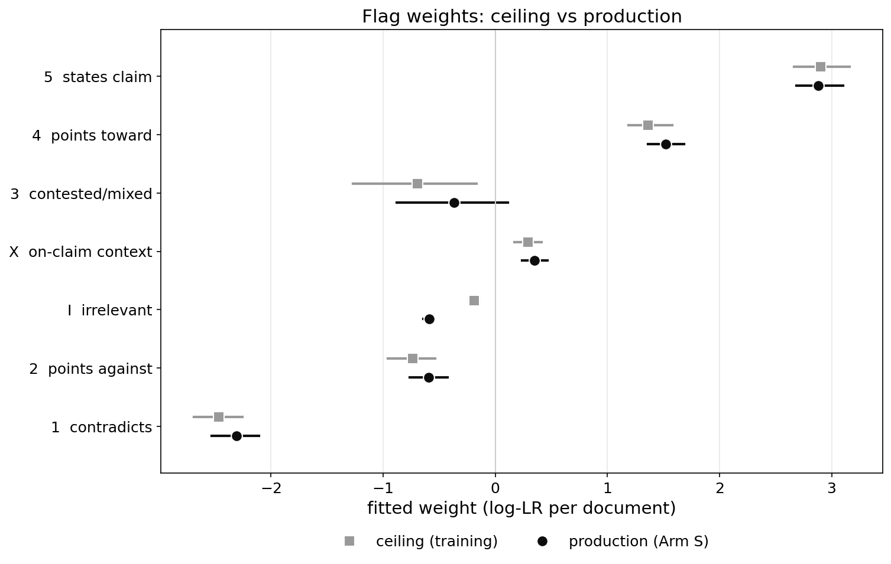
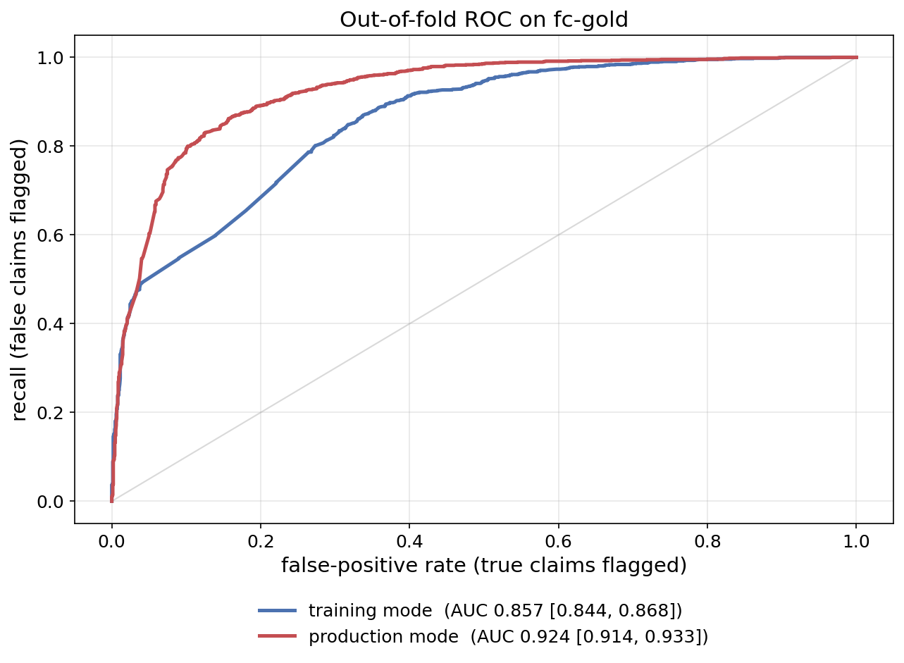

The claims in fc-gold are old. Every one of them has a published fact-check and the web has had years to write about them. So we have to decide what evidence the search is allowed to see when we fit.
Training mode only lets the search see documents published before the claim. That is what a claim looks like on the day it appears. It also removes fact-check sites and articles that copy a fact-check.
Production mode lets the search see any date. It still removes fact-check sites and their copies. That one restriction stays only because every fc-gold claim has a fact-check by construction, and letting the search find it would make the fit circular. Real production will not remove them.
| Fit | What the search sees | AUC | 95% CI width | AVeriTeC AUC | 95% CI width |
|---|---|---|---|---|---|
| Training mode | Documents dated before the claim. Fact-checks removed. | 0.857 | 0.024 | 0.869 | 0.074 |
| Production mode | Any date. Fact-checks removed. | 0.924 | 0.020 | 0.858 | 0.074 |
Out of fold, five folds, claims about the same story kept in the same fold. CI width is the full width of the 95% interval. AVeriTeC is a 500 claim public benchmark with its own evidence, used as an outside check on each weight set.
Production mode scores seven points higher. We checked whether that gain is leaked fact-checks. We hand read 60 documents that production mode called refuting. None was a fact-check on an unlisted site and none was a news article copying one. They were primary sources, news reporting and reference pages. And the production weights do about as well on AVeriTeC as the training weights do. The gain is real evidence, not leakage.
The weights themselves barely move. The two decisive flags, a document that states the claim and a document that contradicts it, get the same weight in both modes. The one weight that changes is the irrelevant flag.

The reason is silence. Some claims come back with ten irrelevant documents. In training mode that happens to 333 true claims and 431 false ones, so silence tells you little and the fit gives an irrelevant document a weight near zero. In production mode a true claim almost always finds something on the open web. Silence drops to 46 true claims and stays at 305 false ones. The fit learns that and gives an irrelevant document a weight of −0.59 instead of −0.19.
A silent claim is never flagged in either mode. Ten irrelevant documents score −5.9 with production weights and the boundary sits at −6.7. To be flagged a claim needs a contradicting document. One contradiction among nine irrelevant documents scores −7.6 and is flagged. That is the behaviour we want. Silence alone passes, silence plus a refutation does not.

The two fits use different evidence, so their AUCs are not the same test. The fair test is to cross them. Take the production weights and apply them to training mode evidence, the evidence a claim has on the day it appears. Then take the training weights and apply them to production mode evidence. Same folds in both directions, so no claim is ever scored by weights that saw it.
| Weights | Evidence | AUC | 95% CI width | Recall at 2% FPR |
|---|---|---|---|---|
| Training mode | Training mode | 0.857 | 0.024 | 41.7% |
| Production mode | Training mode | 0.840 | 0.026 | 40.5% |
| Training mode | Production mode | 0.927 | 0.020 | 37.2% |
| Production mode | Production mode | 0.924 | 0.020 | 38.9% |
Recall counts every false claim, silent ones included. The boundary is always set on the evidence being scored.
Production weights on day zero evidence lose 0.016 against the training fit, and the paired test says that loss is real. Training weights on production evidence lose nothing. They come out 0.003 above the production fit itself, and the paired test says even that small edge is real. They give up about two points of recall at the boundary. The lesson is that the evidence matters far more than which fit made the weights. Moving from day zero evidence to production evidence is worth seven points. Which weights you use is worth at most two.
The one loss has one cause. Production weights treat an irrelevant document as a mild sign of falsehood. On day zero evidence that sign is weak, so the weights over-read it. Training weights treat it as nothing, which costs a little recall at the boundary but nothing in ranking. The same thing explains the AVeriTeC gap. Swap the irrelevant weight and the two sets score the same there.
Neither end is what production looks like. Production will score posts that are days or weeks old. Some will have plenty written about them and some will have nothing yet. So we built an evaluation whose evidence matches that mix.
The September survey pool tells us how old a post is when we score it. The median is 29 days and 82% are older than two weeks.
For each fc-gold claim we drew an age from that distribution and hid every document published later than that. A claim drawn at 20 days sees only what the web had 20 days after it appeared. Undated documents are kept. This gives the same 3,000 labelled claims with the evidence availability production will have. We then fitted the weights on that mix, and we also applied the training weights and the production weights to it unchanged.
| Weights applied to the mixed evidence | AUC | 95% CI width | Recall at 2% FPR | Boundary |
|---|---|---|---|---|
| Fitted on the mix | 0.894 | 0.023 | 35.3% | −4.61 |
| Training weights | 0.897 | 0.022 | 32.5% | −3.99 |
| Production weights | 0.893 | 0.022 | 34.9% | −6.23 |
Five different random age draws give the same AUCs to the third decimal.
All three rank the claims the same way. The training weights come out 0.004 ahead of the fit on the mix, and the paired test says that small edge is real. The production weights are indistinguishable from the fit. The training weights pay for that in recall at the boundary, about three points below the other two. With the irrelevant weight near zero, a single contradiction among nine irrelevant documents lands right on the boundary instead of clearly below it.
All three weight sets pass the two checks we care about. A claim with ten irrelevant documents is never flagged. A claim with one contradicting document among nine irrelevant ones is flagged. The margin above the silent pile is 2.1 for the training weights, 1.3 for the mix fit and 0.3 for the production weights.
Whichever weights we choose, the boundary has to be set on this mixed evidence, not on training mode evidence. The training boundary of −4.0 was set where training mode scores 2% of true claims. On production evidence the scores spread wider and the same boundary would flag many more true claims than that.
The training weights. They rank at least as well as any other set on every kind of evidence we tested, day zero, production and the mix, and they are the fit nobody can call inflated. They give up two or three points of recall at the boundary, and we accept that for a cleaner instrument. The boundary stays where the training fit put it, at −4.0. Set on the mixed evidence it comes out at −4.0 as well, and on production evidence at −4.1, so the training weights and their own boundary ship as one object.
The rest of this page is about the two things we chose not to spend on, a stronger reader and a different search engine. For each we show how much a perfect version would gain, and what the version we could actually buy gained.
We hand read 120 documents from the production reads, 30 from each of four cells. Two judges did it, the second one blind to the gold label, the cell and the reader's flag. Both found the same thing.
| Document | Reader errors, judge one | Reader errors, blind judge |
|---|---|---|
| Refuting flag on a false claim | 0 of 30 | 3 of 30 |
| Supporting flag on a true claim | 0 of 30 | 0 of 30 |
| Refuting flag on a true claim | 23 of 30 | 22 of 30 |
| Supporting flag on a false claim | 14 of 30 | 11 of 30 |
When the reader agrees with the gold it is almost always right. When it disagrees it is usually wrong. Those disagreeing cells are small, 5% of the documents on true claims and 7% of the documents on false claims, but across the 3,000 claims they add up to roughly 500 wrong refutations of true claims and 350 wrong supports of false claims. No fact-check leaks were found in the 60 refuting documents.
The errors are one kind of mistake. In 22 of 37 cases the reader took a sentence about an adjacent fact, a different instance, a proposal instead of the enacted rule, a floor figure instead of the stated one, and graded the whole claim from it. In 8 cases a debunk quoted the claim it was about to reject and the reader read the quote. No error was a matter of strength, a 1 that should have been a 2. Every error flipped the direction or graded an off-scope document.
We replaced the wrong flags with the flag the blind judge said the document deserved, at the rates above, rescored every claim with the frozen weights, and counted what changes at the 2% boundary. The weights are applied as they are, not refitted, so the baseline rows differ slightly from the out-of-fold numbers above.
| Training mode evidence | AUC | Recall at 2% FPR | False claims flagged | True claims flagged |
|---|---|---|---|---|
| Frozen instrument | 0.860 | 38.2% | 573 | 31 |
| Reader errors corrected | 0.892 | 50.1% | 751 | 13 |
| Production mode evidence | AUC | Recall at 2% FPR | False claims flagged | True claims flagged |
|---|---|---|---|---|
| Frozen instrument | 0.927 | 37.2% | 558 | 30 |
| Reader errors corrected | 0.962 | 53.8% | 807 | 12 |
In training mode the fix flags 178 more false claims, 573 to 751, and 18 fewer true claims, 31 to 13. In production mode it flags 249 more false claims, 558 to 807, and again 18 fewer true claims. That is the ceiling for the reader, and it is large. The reason is not that the reader misses refutations. It is that its wrong refutations of true claims pin the boundary low, and once they are gone the boundary can rise and catch false claims that were already scored below it. A better reader would also change the fit a little. Refitting the weights on the corrected reads adds three to four points of recall on top of these numbers, so the weights barely move but the instrument would be refitted.
The cleanest test changes one thing. We took 500 fc-gold claims, 250 true and 250 false, kept the same documents the current reader saw in training mode, and had DeepSeek-V4-Pro read every one of them with the same prompt. We then scored the claims two ways, with the frozen weights and with weights refitted on V4-Pro's own reads, so a reader that spreads its flags differently gets a fair chance. Same claims, same documents, paired bootstrap.
| Reader | Prompt | Claims | AUC, frozen weights | AUC, own weights | Own weights, difference vs current reader |
|---|---|---|---|---|---|
| DeepSeek-V4-Flash, current | v5, frozen | 500 | 0.873 | 0.866 | |
| DeepSeek-V4-Pro | v5, frozen | 500 | 0.863 | 0.851 | −0.014 [−0.037, +0.010] |
| DeepSeek-V4-Pro | v5b, scope rule rewritten | 500 | 0.853 | 0.857 | −0.008 [−0.031, +0.015] |
| DeepSeek-V4-Flash, current | v5, frozen | 1,000 | 0.862 | 0.858 | |
| DeepSeek-V4-Pro | v5b, scope rule rewritten | 1,000 | 0.851 | 0.849 | −0.009 [−0.026, +0.008] |
| Kimi K2.6, reasoning | v5, frozen | 500 | 0.819 | 0.848 | −0.019 [−0.054, +0.015] |
Out of fold, five folds, on the sampled claims only. Brackets are the 95% interval of the paired difference. The frozen weights were fitted on all 3,000 claims, so the own-weights column is the fair comparison.
V4-Pro does not beat the current reader, and its own weights do not help it. The reason is simple. On the 500 claims it withdrew 270 of the current reader's directional votes, and 214 of those had pointed the right way. It added 112 new votes, 77 of them right. The prompt tells the reader to abstain when a document does not settle the exact proposition. V4-Pro obeys that rule. The current reader reads the gist and votes, and the gist is right four times in five, so obeying the rule throws signal away.
v5b is the prompt with that rule replaced by one that lets a document refute a claim when the two cannot both be true. It brings the votes back, 454 added against 416 withdrawn on the 1,000 claims, but the new votes are worse than the old ones. 153 of its 518 new strong refutations land on true claims. The abstentions became false alarms and the ranking did not move.
Kimi K2.6, a reasoning model at eleven times the price per read, does the same thing more strongly. On the 500 claims it moved a thousand reads to on-claim context, withdrew 419 of the current reader's votes, 336 of them right, and added 95. With the frozen weights it is significantly below the current reader. Its own weights recover most of that and it still lands below. The more faithfully a reader follows the scope rule, the more it costs.
The same question for search. First the ceiling, then what we could actually buy.
| Frozen weights, at the 2% boundary | Training mode evidence, recall | Production mode evidence, recall |
|---|---|---|
| Frozen instrument | 38.2% | 37.2% |
| Reader errors corrected | 50.1% | 53.8% |
| One contradicting document given to every false claim that had none | 50.0% | 40.9% |
| Both | 87.5% | 84.1% |
The retrieval row is an oracle. It knows which claims are false and hands each one the document it needs. Production will not work like that. Some false claims have no refutation anywhere and some true claims have no support. It only says how much room there is. The room is about the same size as the reader's, and the two add up, because retrieval supplies the missing refutations and the reader fix stops true claims being dragged below the line. The refutation also has to be decisive. Give the same claims an undermining document instead of a contradicting one and almost nothing changes. With the frozen weights the oracle gains less on production evidence than on training evidence, because a lone contradiction among nine irrelevant documents lands right on the boundary and the other documents on those claims offset it. That is the recall we chose to give up with the training weights.
Exa is a neural search engine. It matches on meaning rather than words, so it should find a refuting document even when the wording differs. We ran it on 1,500 claims in production mode, alone and combined with Serper, and fitted the weights on each set of reads.
Exa finds more evidence. On the false claims it returns a quarter more refuting documents than Serper, and combined with Serper the count doubles. It also returns more supporting documents for false claims and more refuting documents for true claims. The extra evidence points the wrong way about as often as the evidence Serper already had. Serper's documents point the right way seven times for every one that points the wrong way, Exa's six times. The ranking is set by that ratio, not by the number of documents, so the AUC does not move. Exa alone is a point below Serper, and both together tie Serper.
A hand check of 60 refuting documents per engine found both mostly genuine and neither leaking fact-checks. So a second engine with its own queries bought nothing. Reaching the retrieval ceiling would take more than ten documents, several queries per claim, whole pages instead of snippets, and primary sources. That is a different instrument, and we keep this one.